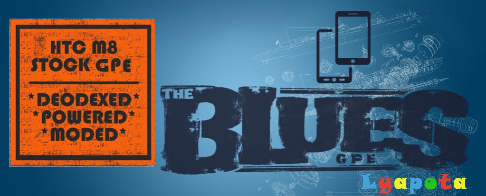

Try pointed at me!
Click at the picture to go to the link

Text Formatting
- bold
- STRONG!
- italic
- Emphasized
- marked
- small
deleted- inserted
- This issubscripted
- This issuperscripted
Quotations
These texts are quoted using short quotation
This is a quote from xda website :
[ROM][Jul 28][#024] Blues* GPE 5.07.1700.15 MRA58K.H15 with Sense Home About ROM/Changelog : * it's my personal ROM that I'm sharing (for those who may like it) * re based on 5.07.1700.15 MRA58K.H15 - July Security Updates * Sense Home is optional in Aroma Installer * updated HTC Sense Home 8.14.781908 * updated SuperSU 2.76 - Credit @Chainfire and a few more ...Credits :
- @lyapota - for his great ROM as the working base
- @xpirt - for his Sense Home modding idea
(visit his thread if you want Sense on non-HTC device - http://forum.xda-developers.com/andr...-2015-t3049438)
- @Captain_Throwback - for his files/fixes for HarmanKardon mod
- @andybones - for his VZW support
and all those who helped to make this a great GPE ROM.

The Blues by lyapota
Text directional overide
Right to Left
These text directional are overided to right to left.<----------------------------------------------------